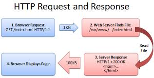

JS class 09 - AJAX and APIs
Back to TOCs
- press 'O' to navigate
- Exit Ticket
Review of Last Class
-Implement advanced jQuery events
-Use event delegation to manage dynamic content
-Update elements of a jQuery selection and chaining to place methods on selectors
Today's Objectives
-Identify all the HTTP Verbs & their uses
-Describe APIs and how to make calls access API data
-Implement an AJAX request with Vanilla JS
-Implement a jQuery AJAX client for a simple REST service
-Separation of concerns – API vs. Client
APIs
-API calls are basically a fancy term for making HTTP requests to a server and sending/receiving structured data from that endpoint
-If that data is structured as JSON, we can easily start reacting and communicating with it thanks to the provided JSON methods
-Best practice is to separate DOM logic from our data models (especially outside data!). This not only allows for cleaner code, but is an easier way to manipulate our layouts and interactions
Some Tips
A Recap of HTTP
-HTTP is a protocol - a system of rules - that determines how web pages (see:'hypertext') get sent (see:'transferred') from one place to another
-Among other things, it defines the format of the messages passed between HTTP clients and HTTP servers
-Remember, clients make requests and servers receive requests and send back responses
HTTP Client
HTTP Web Server

- Client sends a HTTP Request to a HTTP Server running on a remote machine
- The HTTP server processes the HTTP Request. This may entail passing the request to some Web Application, which creates a HTTP Response
- The response gets sent back to the client
- The client processes the response

How does the server know what the request is asking for? This is specified by the URL, a special kind of path that specifies where a resource can be found on the web
HTTP: A Demo
Let's check out Chrome and see how HTTP works under the hood
List of Request Methods
All about Status Codes
| Code | Reason |
|---|---|
| 200 | Ok |
| 301 | Moved Permanently |
| 302 | Moved Temporarily |
| 400 | Bad Request |
| 404 | Not Found |
| 500 | Internal Server Error |
AJAX and JavaScript
XMLHttpRequest and then decide how we want to handle the response by setting the onreadystatechange method of the XMLHTTPRequest object to a custom function
// Create instance of XMLHTTPRequest
var httpRequest = new XMLHttpRequest();
// Set a custom function to handle the request
httpRequest.onreadystatechange = responseMethod;
function responseMethod() {
// Request logic
}
// Alternative method:
// httpRequest.onreadystatechange = function() {
//
// }
- We check for a success and update our application logic
- We check for an error and notify the user
function responseMethod() {
// Check if our state is "DONE"
if (httpRequest.readyState === XMLHttpRequest.DONE) {
// If our request was successful we get a return code/status of 200
if (httpRequest.status === 200) {
// This is where we update our UI accordingly. Our data is available to us through the responseText parameter
console.log(httpRequest.responseText);
} else {
// This is the scenario that there was an error with our request
console.log('There was a problem with the request.');
}
}
}
var httpRequest = new XMLHttpRequest();
httpRequest.onreadystatechange = responseMethod;
// Open method accepts 3 parameter:
// 1. Request type: these are all the HTTP verbs we covered above
// 2. The URL
// 3. Optional boolean third parameter, that dictates wether this is an asynchronous call (default is true)
httpRequest.open('GET', 'http://data.consumerfinance.gov/api/views.json');
// The send method takes an optional parameter. If our API request allows additional parameters or JSON objects to be passed through (primarily through POST requests), we pass them in the send method.
httpRequest.send();
// NOTE: certain APIs may require us to pass additional header data, including setting the MIME type of the request. We can do this through the setRequestHeader method.
// httpRequest.setRequestHeader('Content-Type', 'application/x-www-form-urlencoded');
jQuery AJAX: much easier
// All we need to create a get or post request is use the get or post method
$.get( 'https://data.cityofnewyork.us/api/views/jb7j-dtam/rows.json?accessType=DOWNLOAD', function( r ) {
// We get the data back from the request in the parameter we pass in the function
console.log(r);
});
$.ajax() method allows us significantly more granularity
$.ajax({
url: "https://data.cityofnewyork.us/api/views/jb7j-dtam/rows.json?accessType=DOWNLOAD",
// What we want and how we want it(JSON)
data: {
// q: "select title,abstract,url from search.news where query=\"cat\"",
format: "json"
},
// Work with the response
success: function( response ) {
console.log( response ); // server response
}
})
Weather Map Practice
Let's make a Weather app
http://api.openweathermap.org/data/2.5/weather?q=...).Conclusion
-Separation of concerns – API vs. Client
-Identify all the HTTP Verbs & their uses
-Implement an AJAX request with Vanilla JS
-Implement a jQuery AJAX client for a simple REST service
Q&A
Exit TicketBack to TOCs